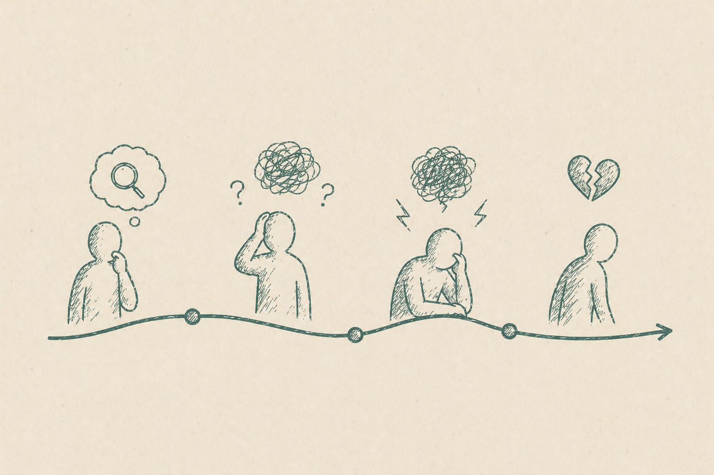

Part Four
Usability, Trust, and the Collapse of Ethos
Information architecture does its rhetorical work quietly. Readers rarely notice a structure that makes sense. They notice immediately when it does not. Confusing navigation, inconsistent organization, and missing structural cues do more than slow people down. They undermine confidence in the system itself.
The previous sections argued that information architecture shapes understanding by determining what knowledge is represented and how readers encounter it. This chapter examines what happens when that communicative role breaks down. The first thing readers lose is not efficiency. It is the ability to interpret the system itself, and with it, the confidence that the system deserves their trust.
When Structure Stops Communicating
A study by Matloobtalab and Ferati shows the dynamic in concrete terms. They examined a university self-service portal, the kind students and faculty use to submit requests, pull documents, and handle administrative tasks. Combining expert review, observed task-testing with real users, and follow-up interviews, they looked at how people interpreted and moved through the portal’s structure. One pattern recurred. Users found the interface short on navigational cues, unable to convey its own organizing logic.

One participant observed that the system was “not really coherent … not very straightforward … You do not get any clues in the interface.” Another expressed ongoing uncertainty about whether actions had been correctly completed: “I don’t know, like now I’ve done it 5 minutes ago. I still do not know where to put it [the request]. I have not learned.”
A third participant named the distrust outright. “My only thought when using those kinds of websites is that I am not sure if my main goal is to send the message [request] to the correct place.”
A Collapse of Ethos
That third comment is the one worth sitting with. This person is not merely lost. They have stopped trusting that the system does what it claims, with no way to confirm whether their action went through. The cues that would normally signal reliability have failed. This is what a collapse of ethos looks like in a working system.
When ethos goes, the breakdown runs deeper than usability. The system is no longer a credible source. It becomes something the reader has to second-guess at every step, which is exhausting and, eventually, disqualifying.
The Numbers Behind the Feeling
The participants described a loss of confidence, but the study also measured it. Every extra click communicated something about the architecture. Instead of reinforcing the system’s logic, additional navigation suggested that readers no longer understood where they were or what would happen next.
Matloobtalab and Ferati compared overall usability ratings with the number of clicks required to complete each task. The two moved together in a strong inverse relationship (r = −0.737, p < 0.05). More clicks, lower usability ratings. The clicks themselves are not the important finding. They matter because they reflect growing uncertainty about the system’s organization, and that uncertainty gradually erodes trust.
Why Abandonment Is the Rational Response
Once readers stop trusting the architecture, abandoning it becomes the logical response. In the study, participants often bypassed the portal altogether and contacted IT staff directly. The portal contained the information they needed, but its structure failed to convince them they could reach it reliably.
This is Salvo’s “site of intervention” failing in practice. Information architecture is meant to create the conditions for successful communication. When readers can no longer interpret the system’s logic, they look for another source they believe they can trust. The solution is rarely more features. It is a structure that communicates clearly enough to be understood.
Structure as Responsibility
Information architecture is more than a method for organizing content. It shapes how people encounter, interpret, and judge information. Across the studies examined throughout this site, one pattern appears consistently. Structure performs rhetorical work whether readers notice it or not.
That responsibility extends beyond human readers. Organizations increasingly depend on self-service support, enterprise search, and AI-assisted retrieval, all of which rely on structured representations of knowledge. Taxonomies, metadata, ontologies, and other architectural models influence not only what people find but also how intelligent systems retrieve, connect, and interpret information. A retrieval system is only as trustworthy as the architecture that supports it.
Salvo’s description of information architecture as a “site of intervention” ultimately becomes a call to responsibility. Every structural decision influences how knowledge is understood, whether by a person navigating a help center or an AI retrieving information from it. Good architecture earns trust because it communicates clearly. When that communication fails, trust disappears with it. Information architecture is not simply a container for communication. It is part of the communication itself.